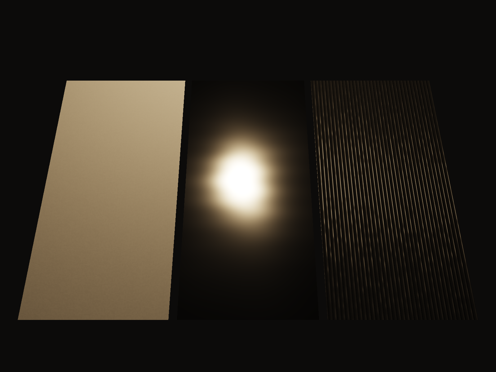
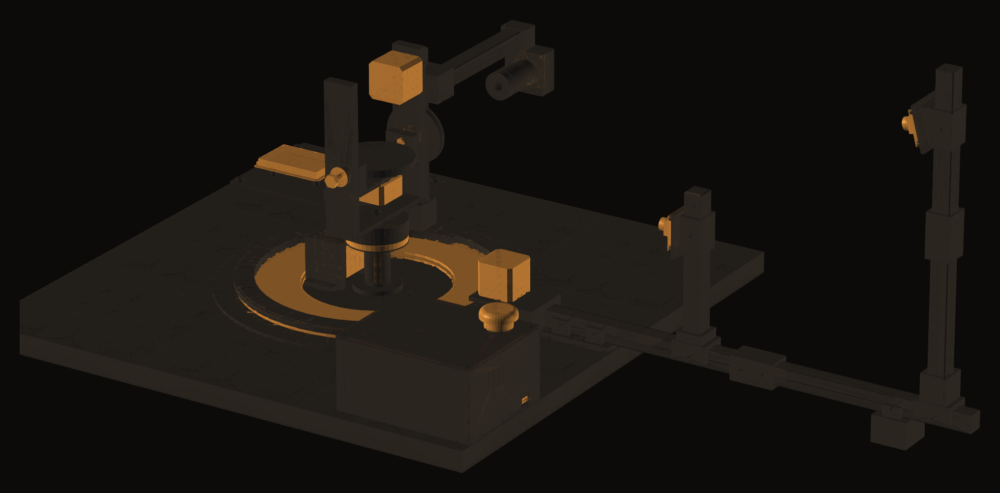
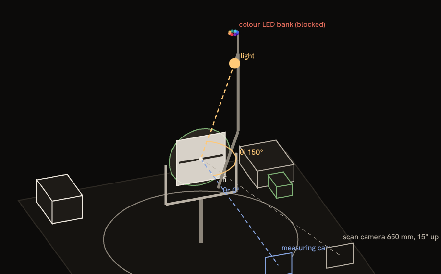
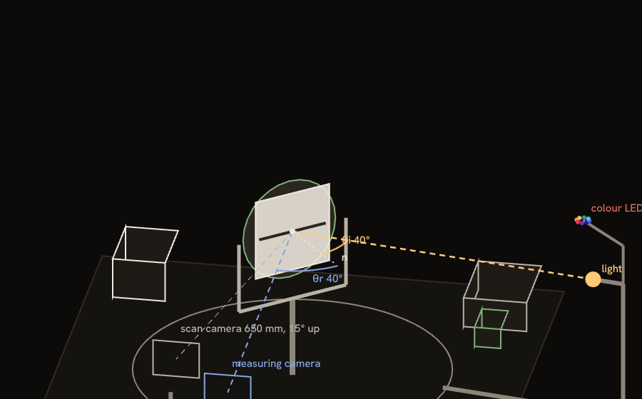
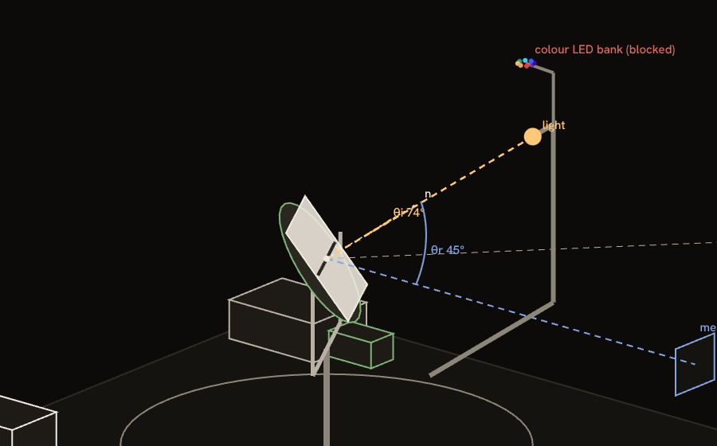
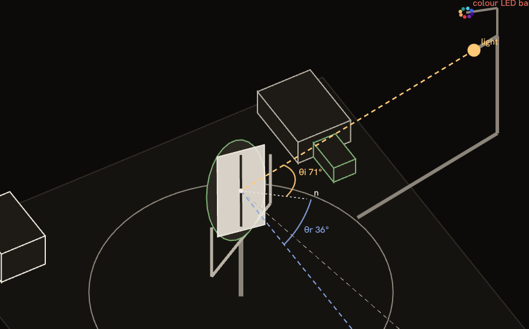
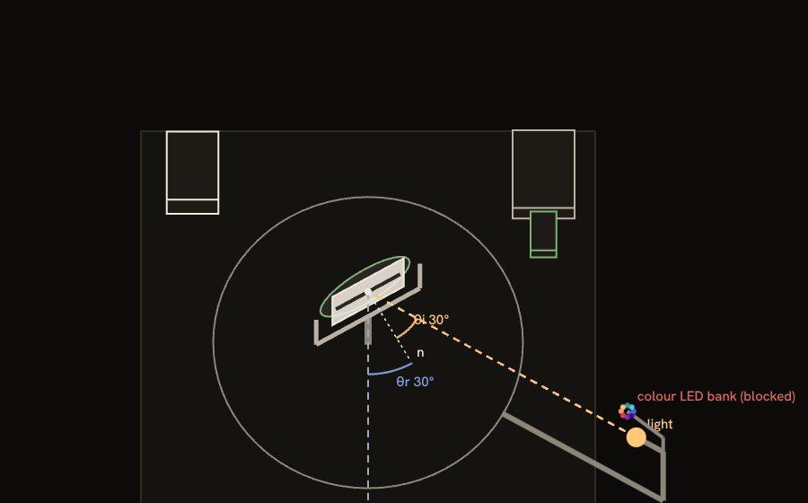
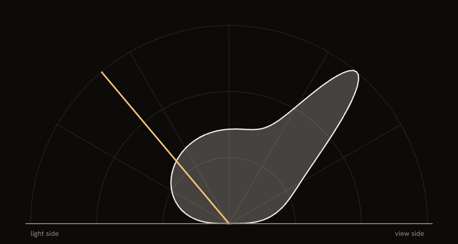

A mirror finds the table's real zero
Simulated run. The peak should sit at 40°, half the lamp angle. The simulator hid a 0.4° error in the table; calibrate mirror measures it and removes it.
A lamp circles a flat sample while a fixed camera watches, to measure how it reflects light at every angle.
Design stage: no machine has been built or measured yet.

A live rendering with the simulator's reflectance model, not a photograph. Move the pointer or use the arrow keys to move the lamp.
Lamp, table, tilt and spin all move; the camera never does. Watch each axis, or drive it yourself.

M4The lamp swings around the ring
Loading the CAD model…
tools/cad/poses.py and lit only by its own lamp. Printed parts black, bought parts gold. A render, not a photograph. Drag to look around.A gonioreflectometer measures the bidirectional reflectance distribution function (BRDF): for light arriving from one direction, how much of it leaves toward every other direction.
Lab instruments that do this cost as much as a car. OpenGonio follows the design of Ansari-Asl et al. (2024) and rebuilds it from 3D-printed black ABS (acrylonitrile butadiene styrene), M2 screws and off-the-shelf modules. One person with a printer and a screwdriver can build it: no soldering, drilling, sawing or crimping, and every part comes from Amazon, Digi-Key or Adafruit.
Planned cost: $569.10, under a hard cap of $630.

Motor M4 carries a 3000 K white lamp around a 12 inch (305 mm) turntable ring, anywhere from 20° to 324° around the sample.

M3 turns the sample to face the camera at a new angle. At half the lamp angle, a mirror throws the lamp straight into the lens.

M2 tilts the sample inside a yoke, for light and view directions that don't share a plane.

M1 spins it on its own axis, for brushed metal, fabric and anything else that looks different turned the other way.

A USB camera with a 16 mm lens stopped to f/8, 350 mm away. It never moves, so every angle comes from the motors alone.

The software turns the photos into a reflectance curve, then fits base colour, roughness and metallic for game engines and Blender.
The software is tested end to end on a simulated machine with known materials. These are its real outputs.
Simulated run. The peak should sit at 40°, half the lamp angle. The simulator hid a 0.4° error in the table; calibrate mirror measures it and removes it.
Simulated run: a plastic made with known numbers, photographed by the simulated camera, then fitted.
| Base colour | Roughness | Metallic |
|---|
0.159
per steradian (sr) in a simulated run, measured against a PTFE white reference. A 50 % grey matte surface should read 0.5/π ≈ 0.159.
Simulated run, one dot per photo. On the diagonal means the fitted material predicts that photo exactly.
No OpenGonio has been built, so every claim on this site says where it comes from: simulated, modeled, or not yet tested.
Each stage ends with something that works. Each step is a checklist: time, what you need, what to do, how to check it, what to do if the check fails.
Light lands on a surface from one direction; the bidirectional reflectance distribution function (BRDF) says how much of it leaves toward each other direction. A mirror sends it all one way, chalk spreads it evenly, and most real materials sit in between.
Anything bright near the sample reflects onto it and into the camera. Matte black ABS keeps the machine out of its own measurements, the way a photographer's studio is painted black.
Not known yet, and the site won't pretend otherwise. Axis repeatability of 0.1° is modeled from the motor step size; measurement uncertainty has not been characterized because no machine exists.
A reflectance curve as a CSV (comma-separated values) file, with the angles of every photo, and a fitted material (base colour, roughness, metallic) for glTF, Blender, Unity and Unreal. Stages 11 to 13 add 3D scans with colour.
Yes. The software runs against a simulated machine: make sim runs every check, and opengonio app --sim mirror opens the control app on a simulated mirror. The lab runs in this browser.
Not necessarily. It runs from a laptop over USB-C (Universal Serial Bus Type-C), or standalone from a Raspberry Pi Zero 2 W with a keypad and a small screen (stage 15).